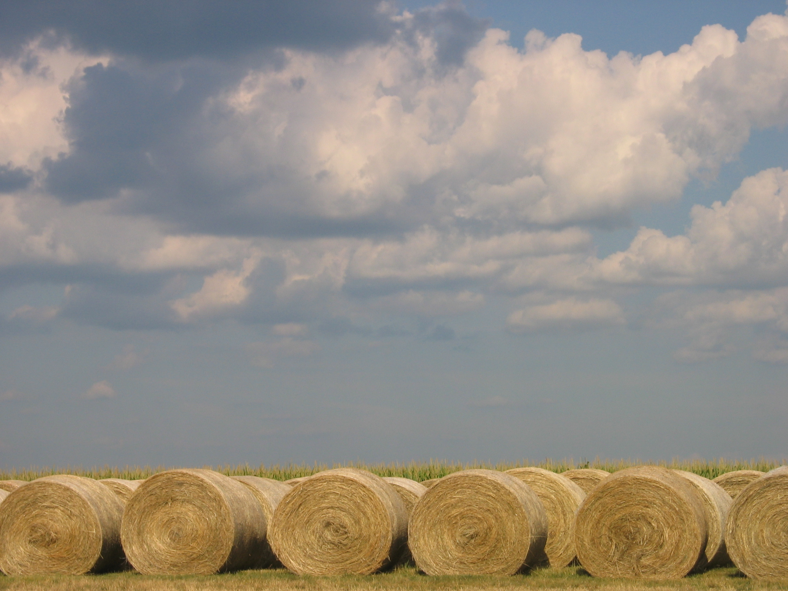
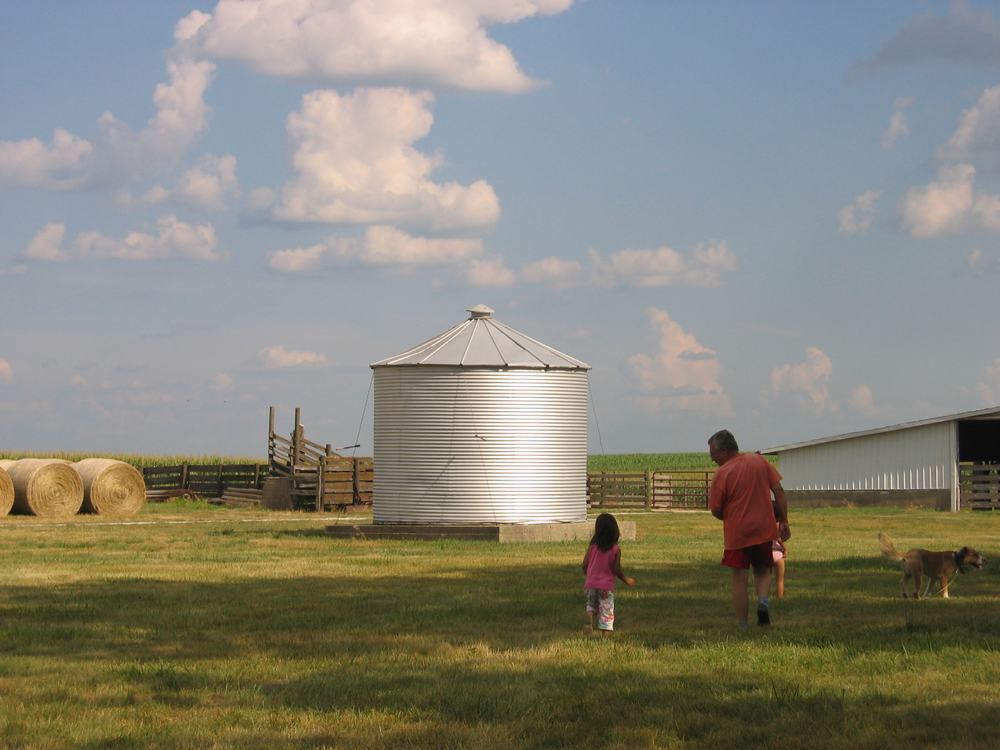

last experienced: 01.12.2021
 The smell of hay and horse feed is extremely strong and almost makes your nose itch. There’s a very earthy smell to hay, but it’s not fresh like the smell of fresh cut grass. Instead, it’s very rich. I grew up going to my grandparent’s farm in central Illinois. I would beg my grandpa to wake me up at 7:00 to go feed the horses with him. We’d go out in his red Ford truck with the dogs trailing behind, and the smell of hay and horse feed flowing from the bed of the truck. The farm and its countryside setting are my most comforting and cherished memories. I love the calmness and the simplicity of our lives when we are there. There’s so much to appreciate.